This project is intended to play with filters and frequencies, generating various image types including edge detectors, hybrid images with varying
frequencies, sharpening filters, Gaussian/Laplacian stacks, and multiresolution image blends. Hope you enjoy!
Part 1.1: Convolutions From Scratch!
Please find the code for convolution with 4 for loops, convolution with 2 for loops, and the runtime for those two functions as well as the scipy convolve2d
function.
# Four for loops
def conv4(image, kernel):
H, W = image.shape
kH, kW = kernel.shape
pad_h, pad_w = kH // 2, kW // 2
image = np.pad(image, (pad_h, pad_w))
out = np.zeros((H, W))
for i in range(H):
for j in range(W):
for m in range(kH):
for n in range(kW):
out[i, j] += kernel[m, n] * image[i + m, j + n]
return out
# Two for loops
def conv2(image, kernel):
H, W = image.shape
kH, kW = kernel.shape
pad_h, pad_w = kH // 2, kW // 2
image = np.pad(image, (pad_h, pad_w))
out = np.zeros((H, W))
for i in range(H):
for j in range(W):
filter = image[i:i+kH, j:j+kW]
out[i, j] = np.sum(filter * kernel)
return out
# Four for loop runtime: 0.1573 seconds
# Two for loop runtime: 0.0492 seconds
# Convolve2D runtime: 0.0010 seconds
For runtime the 4 for loop (referred to as 4F) implementation is the slowest, followed by the 2 for loop (referred to as 2F) implementation, followed by the
built-in scipy convolve2d (referred to as Conv2D) function. 2F is faster than 4F because it utilized numpy vectorization for the kernel, which optimizes
the function for larger kernels and gets rid of the two inner for loops in 4F. Conv2D is faster than 2F because for larger kernel sizes, it performs
convolution in the frequency domain. This is because convolution in the time domain is practically equivalent to multiplication in the frequency domain,
making FFT-based convolution much faster. This enables Conv2D to be significantly faster for large kernel sizes than 2F.
We use padding to handle boundaries in the same manner for all three convolution implementations. This padding applies (kernel dimension / 2) layers of
zeros around the image. This causes the kernel to “see” less neighbors for the edge pixels, weighting the result for those pixels towards lower-value,
darker pixels.
Please find all the relevant images for this part below.
4 for loop convolution with box filter2 for loop convolution with box filterscipy convolution with box filterscipy convolution with Dx finite difference operatorscipy convolution with Dy finite difference operator
Part 1.2: Finite Difference Operator
Please find all the images below:
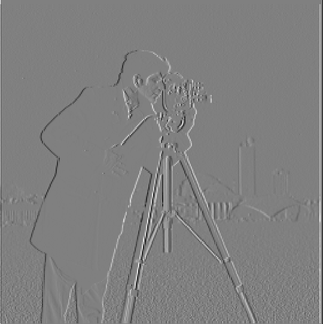
Cameraman convolved with Dx
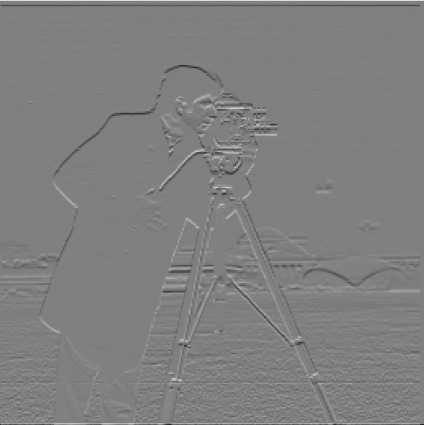
Cameraman convolved with Dy
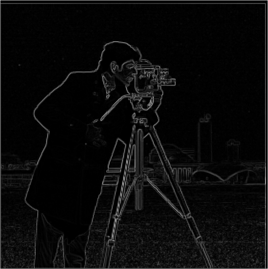
Cameraman gradient magnitude image
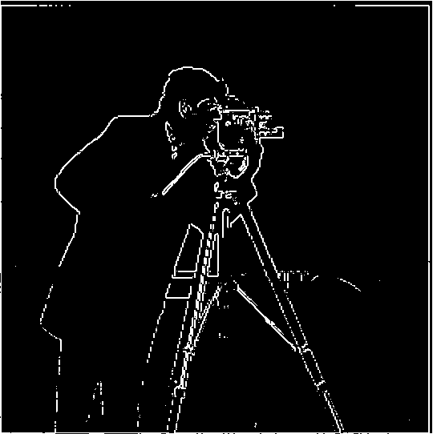
Binarized gradient magnitude image with 25% threshold
For the threshold value, I chose 25% of the white-color pixel (value of 255) which ended up being 63.75. This was a result of trial and error,
as I started with 50% of 255, which resulted in major portions of the man’s edge being cut off. I then tried 20%, which had a bit too much noise near
the bottom center-right of the image that was not an actual edge of the image. I finally tried 25% and it seemed to work good for the binarized image,
locating most of the cameraman’s edge as well as the camera/tripod, while reducing the noise at the bottom to be marginal.
Part 1.3: DoG Filter
Please find all the relevant images for Gaussian blur and Derivative of Gaussians (DoG) implementations below:
Cameraman binarized gradient magnitude image for DoG; 25% threshold
There is significantly less noise for the binarized edge detector image with threshold 25% when convolved with a Gaussian whether through Gaussian blur or
derivative of Gaussians (DoG). There are also noticeably more edges of the cameraman and scenery that the binarized gradient magnitude image shows,
indicating better edge detection.
Part 2.1: Image Sharpening
The unsharp mask filter essentially adds more of the higher frequencies to the original image to “sharpen” the original image. The process for calculating
these frequencies is done by initially blurring the original image by a Gaussian low-pass filter but consolidates the lower frequencies of the image in
a “blur” effect and then subtracting the original image by the blurred image in order to result only the high-frequency pixels of the image. This
high-frequency image is then multiplied by a hyperparameter ⍺, where bigger values of ⍺ would enable greater “sharpening” of the original image. This
resultant image is then added to the original image in order to create the sharpened image. This whole process can be represented as f + ⍺(f - f * g)
where f is the original image, g is the Gaussian kernel, and * represents convolution. This expression can be changed as f + ⍺(f - f * g) =
(1 + ⍺)f - ⍺(f * g) = f * ((1 + ⍺)e - ⍺g). The last expression represents convolving the original image by the unsharp mask filter or (1 + ⍺)e - ⍺g, where
e is the unit impulse. This convolution allows our images to be sharpened as seen below.
Blurred Taj Mahal
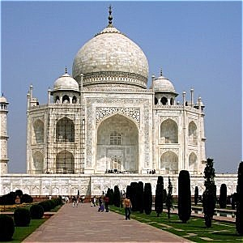
Sharpened Taj Mahal
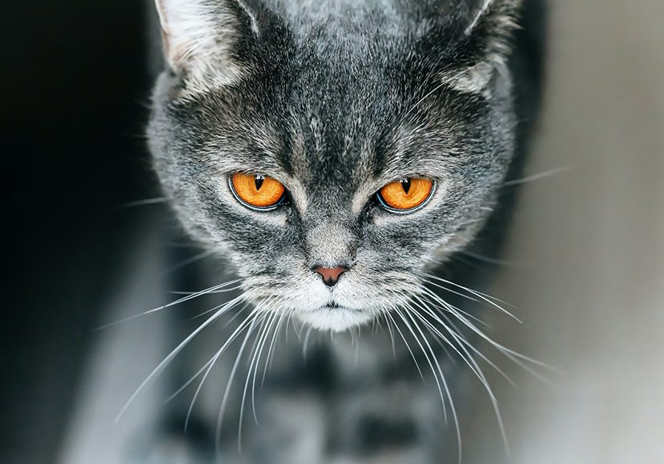
Original CatBlurred CatRe-Sharpened Cat
Part 2.2: Hybrid Images
Please find the images in the hybrid creation process for Derek and Nutmeg below, from alignment, filtered images, and hybrid. We chose cutoff frequencies
of 7 for the low-pass image and 4 for the high-pass image. These were determined through trial and error, though I knew that the high-pass frequency should
be lower than the low-pass frequency to ensure proper hybrid image creation because it allows blending of the higher frequencies in the low-pass image with
the lower frequencies of the high-pass image.
Original DerekOriginal Nutmeg
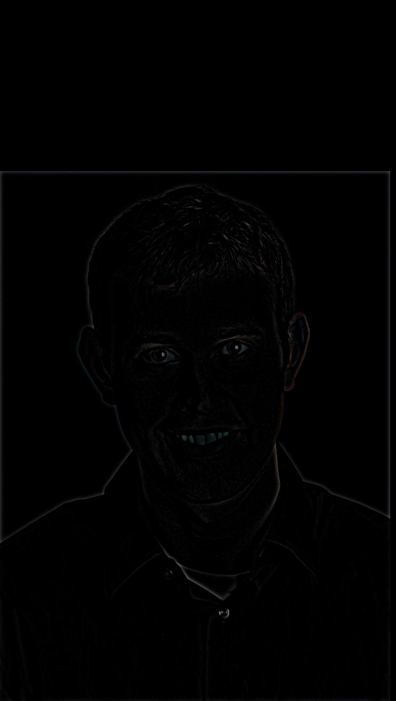
Aligned and High-Pass Filtered Derek
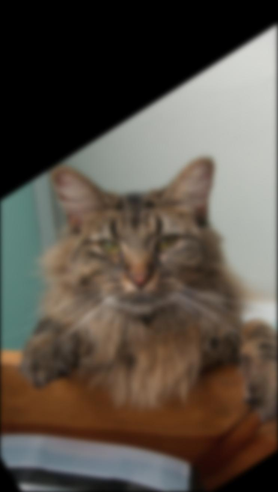
Aligned and Low-Pass Filtered Nutmeg
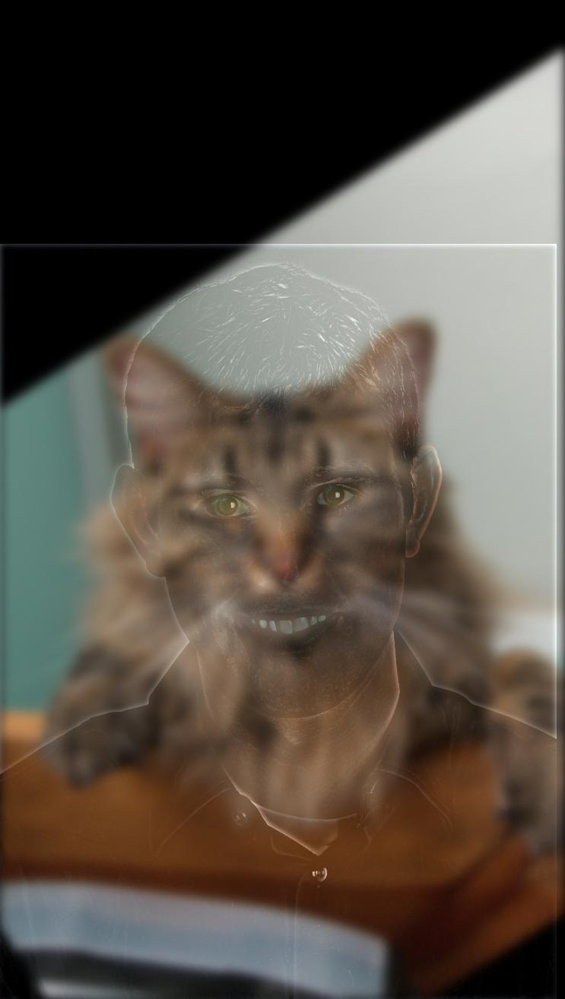
Hybrid Derek and Nutmeg
Also, find the log magnitude of the Fourier transforms for the original, filtered, and hybrid Derek and Nutmeg below, providing a thorough frequency analysis
verifying the result.
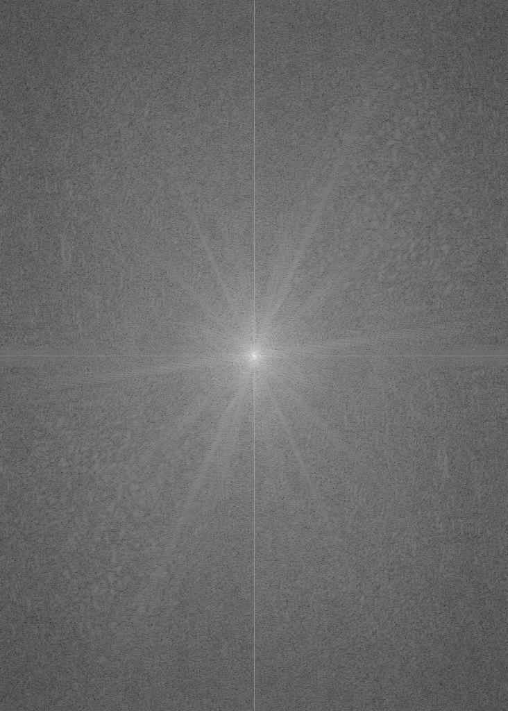
Original Derek Fourier Transform
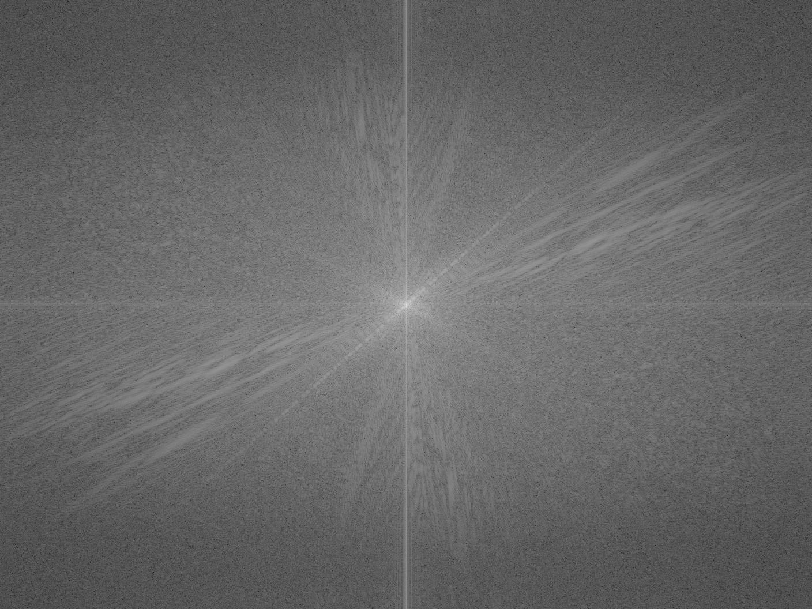
Original Nutmeg Fourier Transform
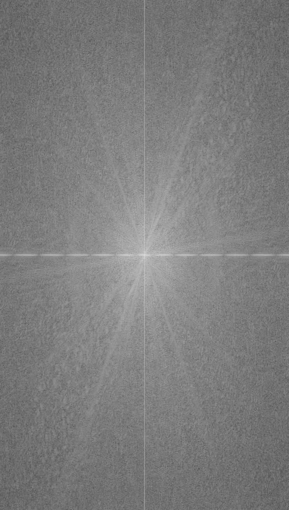
Aligned and High-Pass Filtered Derek Fourier Transform
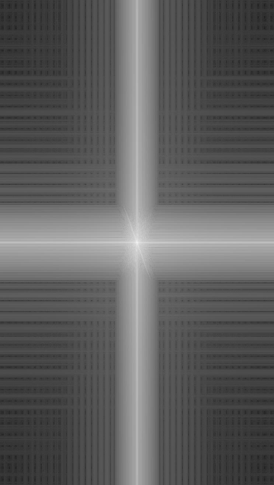
Aligned and Low-Pass Filtered Nutmeg Fourier Transform
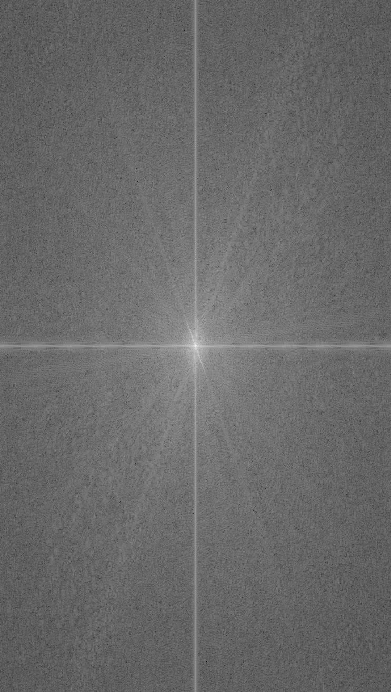
Hybrid Derek and Nutmeg Fourier Transform
Finally, please find the original and hybrid images for two of my choice:
Fish Image
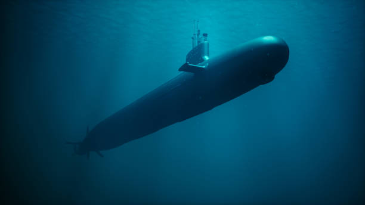
Submarine Image
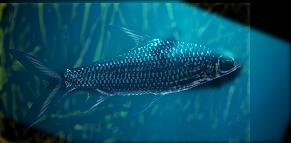
Fish and Submarine HybridHappy Face Image
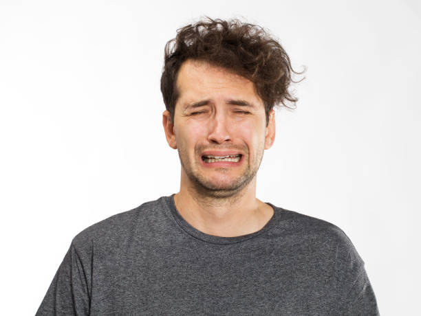
Sad Face Image
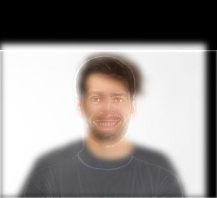
Happy and Sad Face Hybrid
Part 2.3: Gaussian and Laplacian Stacks
Please find the images of the Laplacian stack and originals in line with the Figure 3.42 of the Szelski paper below. The rows are Laplacian depth 0,
Laplacian depth 2, Laplacian depth 4 (essentially the Gaussian blur from Gaussian stack since depth of the stack is 4, and the originals respectively. The
columns are apple, orange, and hybrid oraple respectively.
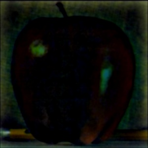
(a)
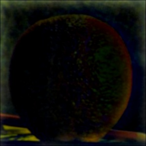
(b)
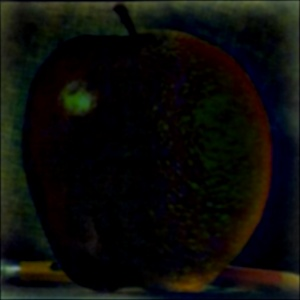
(c)
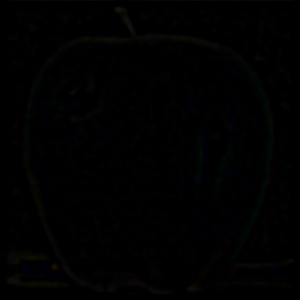
(d)
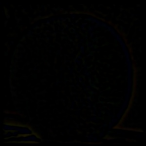
(e)
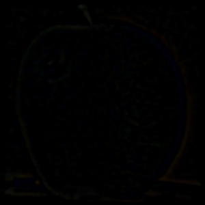
(f)
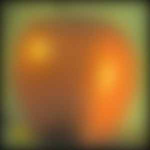
(g)
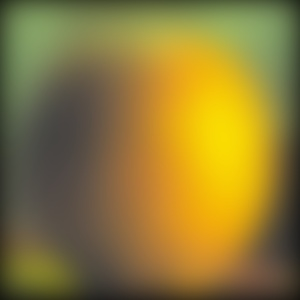
(h)
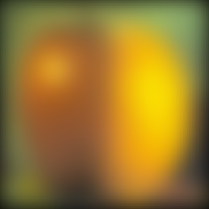
(i)(j)(k)
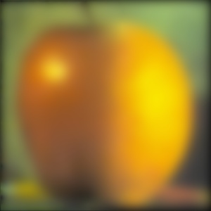
(l)
In order to blend the images, I used a left-right linear mask represented as a Gaussian stack. The mask blended together the images at the seam in the center
using np.linspace() which enabled a smooth transition for blending rather than a visible seam.
Part 3: Other Examples
These are some extra images from the Prokudin-Gorskii collection! I used the same displacement window [-50, 50] and pyramid depth (level) 3 as that of Part 2
multi-scale image pyramid.